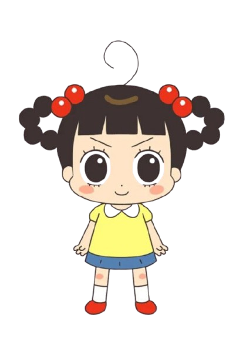
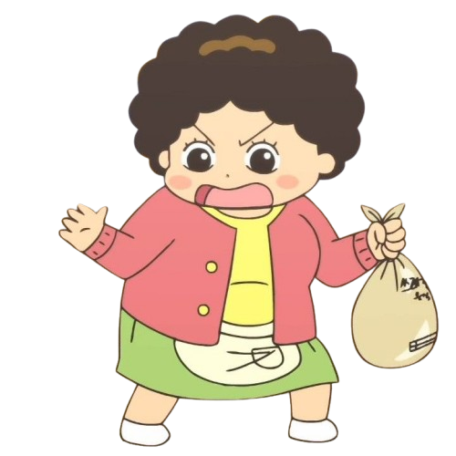
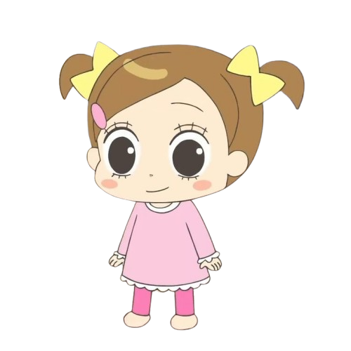
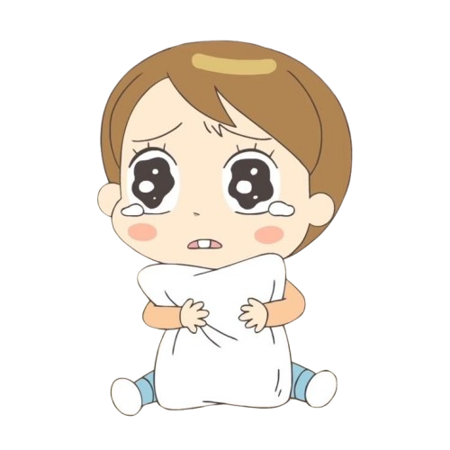

Jadoo And Her Family
Choi Jadoo
ᯓ Choi Jadoo (최자두) adalah protagonis utama Hello Jadoo. Ia adalah seorang gadis Korea Selatan berusia 10 tahun yang sering meluangkan waktu untuk berpetualang dalam hidupnya.
Jadoo itu tomboy banget, nakal, dan ga bisa diem. Si rambut hitam kuncir donat, mata hitam gede, && kulitnya putih. Dia kuat buat ukuran umur segitu, jago olahraga, apalagi main bola. Kadang dia ceroboh, males banget buat ngerjain PR sama kerjaan rumah, suka banget jail sama temen-temen dan adeknya, tapi kalo kebablasan dia bakal minta maaf. Jadoo suka banget sama hewan, peliharaannya dirawat baik. Suka makan tapi pilih-pilih juga, dan Jadoo juga suka cowok ganteng, tapi ga suka yang jahat ( yaa umumnya perempuan gasii ini ) Meskipun tomboy dan usil, dia tetep care sama keluarga dan selalu berusaha benerin kesalahan nya.
Kim Nanhyang
ᯓ Ibu Jadoo, Nahyang. Dia super rapih, hemat, dan peduli banget sama keluarga. Pagi-pagi dia udah siapin sarapan buat Jadoo sama adiknya Mimi, terus bangunin mereka biar siap sekolah. Mimi sih nurut aja, tapi Jadoo suka males-malesan, bikin ibu kadang kesel. Abis itu, ibu beresin rumah, nyuci baju, jemur di matahari, ngurus tabungan keluarga, bahkan kadang ngatur pengeluaran supaya hemat. Ibu juga selalu ngawasin anak-anak biar ga nakal, kalau ada yang ngelanggar aturan, siap-siap deh ditegur atau dihukum. Meskipun kelihatan galak, ibu sayang banget sama keluarga dan hewannya, kayak peliharaan Jadoo yang dirawat dengan baik.
Choi Hodol
ᯓ Ayahnya, Hodol, beda banget sama ibu. Dia males, sering nunda-nunda, doyan nonton TV, dan suka naik taksi kemana-mana. Pagi-pagi sering panik karena telat bangun, makan sarapan cepet-cepet, dan siap-siap kerja. Kadang bikin masalah, misal ga mau benerin keran rusak, tapi dia tetep sayang sama anak-anak. Contohnya, waktu Jadoo minta uang jajan, dia malah kasih uang lebih supaya cukup buat beli snack. Sayangnya, ayah juga punya masalah minum alkohol, sampe bikin ibu kesel dan pergi beberapa hari karena ga tahan. Tapi meski begitu, dia tetep punya hati baik buat anak-anaknya.
Choi Mimi
ᯓ Choi Mimi (최미미) adalah seorang gadis berusia 8 tahun yang merupakan adik perempuan Choi Jadoo.
Mimi itu kulitnya putih, pipinya merah-merah, mata gede, rambut cokelat pendek yang biasanya dikuncir pake pita kuning. Dia keliatan imut dan kadang chubby, tapi dianggap lebih cantik dari Jadoo. Biasanya dia pake baju pink lucu dengan kerah putih dan sepatu pink.
Mimi kadang manja dan peduli banget sama penampilannya, dia juga baik dan sayang keluarga, apalagi sama Jadoo. Dia loyal banget sampai rela nolak cowok yang dia suka kalau cowoknya ga baik.
Choi Seunggi
ᯓ Choi Seunggi (최승기) adalah anak laki-laki berusia 5 tahun yang merupakan adik dari Choi Jadoo. Seunggi itu kulitnya putih, pipinya merah-merah, mata gede, rambut cokelat pendek ada satu rambut nyelip. Biasanya dia pake overall biru sama kaos lengan panjang oranye dan sepatu kuning. Seunggi itu anaknya baik, manis, polos, ramah, dan kelihatan imut kayak bayi, LUCU BANGET DEHH. Seunggi juga suka menabung, kadang tabungan nya selalu di curi sama Jadoo.
❮❮ ❯❯